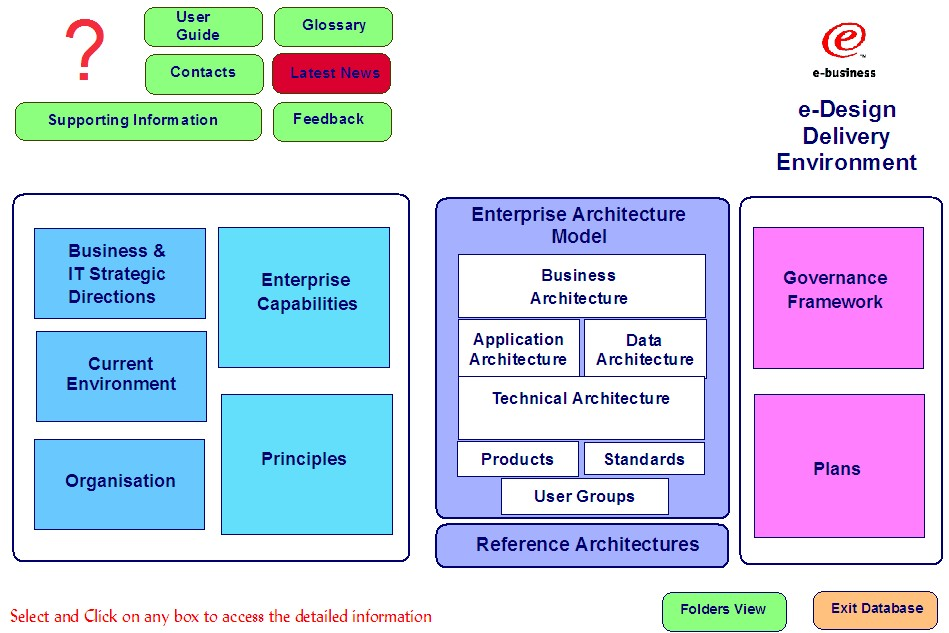

Examples of outputs produced using the ARC 312 Architecture Management Frameworks WP, can be found in:
-
·TheEnterprise and IT Architecture (E&ITA) KN ICM database – where there are several samples considered to be
‘best practice’
-
The IBM Enterprise Architecture (EA) Method database, which is available to EA trained practitioners – provides
samples from multiple industries, often coming from a different organizational focus. There are examples, which
show detailed linkages into the procurement process and others with a heavy emphasis on the incorporation of
architecture management activities into the application development lifecycle.
The location of example Architecture Delivery Environments, are highlighted in section ‘4 Work Product Inputs’, above.
The diagram below is the front-end navigator for one of these examples - the e-Design Delivery Environment. It provides
a basic database for customization to specific client requirements. This front-end navigator and other lower-level
navigators would be customized to reflect client preferred wording and style. This is just a sample:

Behind each of the boxes shown in the above diagram, is the detailed content of each of the work product outputs and
deliverables produced during the initial engagement, which defined this delivery environment. Please note: No single
engagement will provide all the content possible – this is built up over time as follow-on activities (normally
identified as part of the ORG 305 Transition Initiatives WP and stored under the box marked ‘Plans’ above) are
completed and individual solutions are defined and implemented.
Attached to this Architecture Management DCD in the IBM Global Services Method, is a template file, which contains the
basic design of the e-design Delivery Environment, ready for customization.
Attached to the Enterprise and IT Architecture KN ICM database, is a version of this database with samples of many of
the contents/outputs which would normally be produced in either a Business Architecture – Quickstart, or IT
Architecture – Quickstart engagement. In particular, this version contains a default Technical Architecture (produced
using ARC 308 Enterprise Technology Framework), which allows a reusable, common technology framework to be put in place
for a specific client, very quickly.
As far as the deliverables produced using the Business Architecture – Quickstart engagement model are concerned, these
would be placed in the above framework as follows:
-
Business Architecture Context DCD – is placed in the boxes represented in the left-hand section of the diagram
shown below. Namely ‘Business and IT Strategic Directions’ and ‘Enterprise Capabilities’
-
Business Architecture DCD – is split between the ‘Principles’ box and ‘Business Architecture’ box shown in the
‘Enterprise Architecture Model’ middle section. The sample shows the process/activities, information subject areas,
events, roles and locations for an Insurance company.
-
Application Architecture DCD – is split between the ‘Principles’ box, the ‘Application Architecture’ box and the
‘Reference Architectures’ box shown in the ‘Enterprise Architecture Model’ middle section. The sample shows the
application function groups for a Utilities company. The ‘Reference Architectures’ section has summaries of various
IBM reference architectures including the Patterns for e-Business and the Enterprise Solutions Structures (ESS)
templates.
-
Architecture Management DCD – is placed mainly in the ‘Governance Framework’ box shown in the right-hand section,
although some organizational content may go in the ‘Organization’ box in the left-hand section.
-
Business Architecture Transition Considerations DCD – is placed in the ‘Plans’ box shown in the right-hand section
-
Business Architecture Final Report DCD – can be placed either in the ‘Business and IT Strategic Directions’ box in
the left-hand section, or the ‘Business Architecture’ box shown in the ‘Enterprise Architecture Model’ middle
section, dependant on client preference and desired emphasis. In addition to the above, deliverables produced as
part of the IT Architecture – Quickstart engagement model, would be placed in the framework as follows:
-
IT Architecture Context DCD - is placed in the boxes represented in the left-hand section of the diagram shown
below. Namely ‘Business and IT Strategic Directions’, ‘Enterprise Capabilities’ and ‘Principles’.
-
IT Architecture DCD – provides the main content for the ‘Enterprise Architecture Model’ middle section. The
attached samples show the applications, data stores and user groups for a Utilities company. The Technical
architecture includes a default enterprise technology framework, which is appropriate for all companies in all
industries. 80 – 90% of this specific asset should be reusable for each client situation.
|